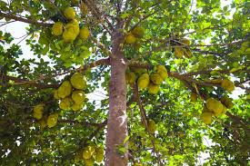

Jackfruit Tree (Artocarpus heterophyllus)
Scientific Name: Artocarpus heterophyllus
Description: The Jackfruit Tree is native to tropical regions of South Asia and produces the world's largest fruit borne on a tree. The fruits are huge, green, and covered with spiky skin. Jackfruit is valued for its sweet taste when ripe and meat-like texture when unripe, making it a vegan favorite. The tree has glossy green leaves and grows quite tall, providing dense shade.
Care Tips:
- Water: Needs regular watering, especially during dry spells.
- Light: Prefers full sun for optimal fruit production.
- Temperature: Best grown in warm, humid climates around 25°C to 35°C.
- Soil: Requires rich, well-drained soil with good organic matter.
Medicinal Uses:
Jackfruit is rich in vitamins, fiber, and antioxidants. Traditionally, it has been used to improve digestion, boost immunity, and manage blood sugar. Even its seeds are roasted and eaten for their nutritional benefits.